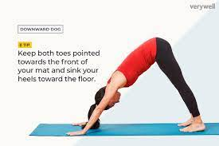

Yoga improves strength, balance and flexibility. Slow movements and deep breathing increase blood flow and warm up muscles, while holding a pose can build strength
When to do Yoga? The very best time to practice yoga is first thing in the morning before breakfast. Upon waking, empty the bowels, shower if you wish, then commence the day with your regime of yoga practices. The second most conductive time is early evening, around sunset.
prayer
Om......................Om....................Om.................
Sahana Vavathu, Sahanou Bhunaktu
Sahaveeryam-Karvavahai
Tejaswinaa Vadhitamastu, Ma...Vidvishavahai
Om.... Shanthi......... Shanthi.......... Shanthi hi......
Resting in the relaxation pose called Savasana (which means Corpse Pose in Sanskrit), for five or ten minutes at the end of a yoga session works powerfully on many levels. 1) Releasing. It releases the muscles and integrates the work you've done in class, before you continue with the rest of your day or evening